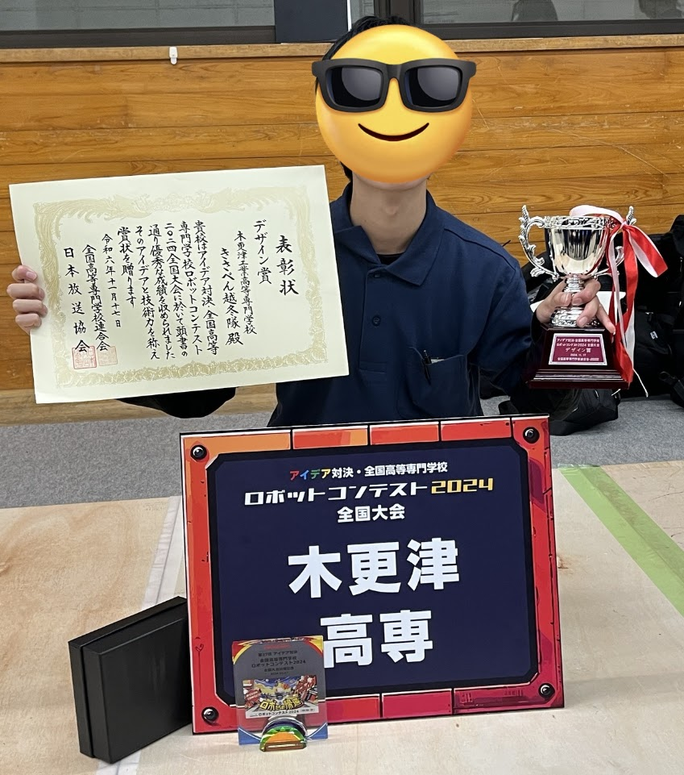
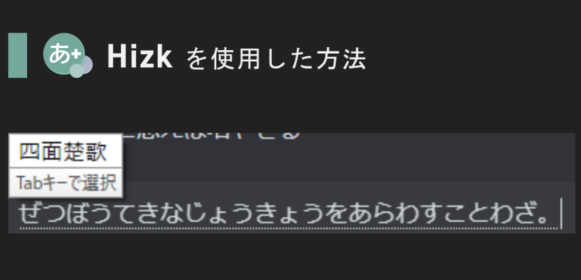
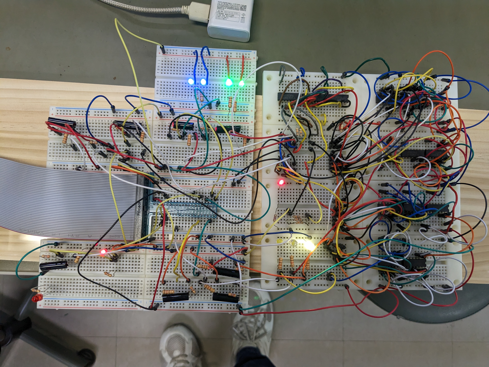

高専ロボコン
マネージャー・制御・操縦
2024〜2025年はAチームのマネージャーと制御を担当。全国大会では操縦も担当しました。
木更津高専から2022〜2025年に出場
こかすた〜
木更津高専 情報工学科
IMEやDiscord Botを開発しています。高専ロボコンでは、制御や操縦を担当しました。
連絡先
マネージャー・制御・操縦
2024〜2025年はAチームのマネージャーと制御を担当。全国大会では操縦も担当しました。
木更津高専から2022〜2025年に出場

意味から変換するIMEの開発
言葉の意味を入力すると、対応する単語を変換候補に表示します。MozcをベースにGPT-4を利用しました。
2024年 Kloudハッカソン #4 優秀賞

Raspberry Piと自作回路の電卓
ロジックICで組んだ2bit加減算回路をRaspberry Piに接続し、計算結果を表示します。
DIVER OSINT CTF 2025にチーム「m01nm01n」で参加し、全体5位でした。
活動履歴を見る